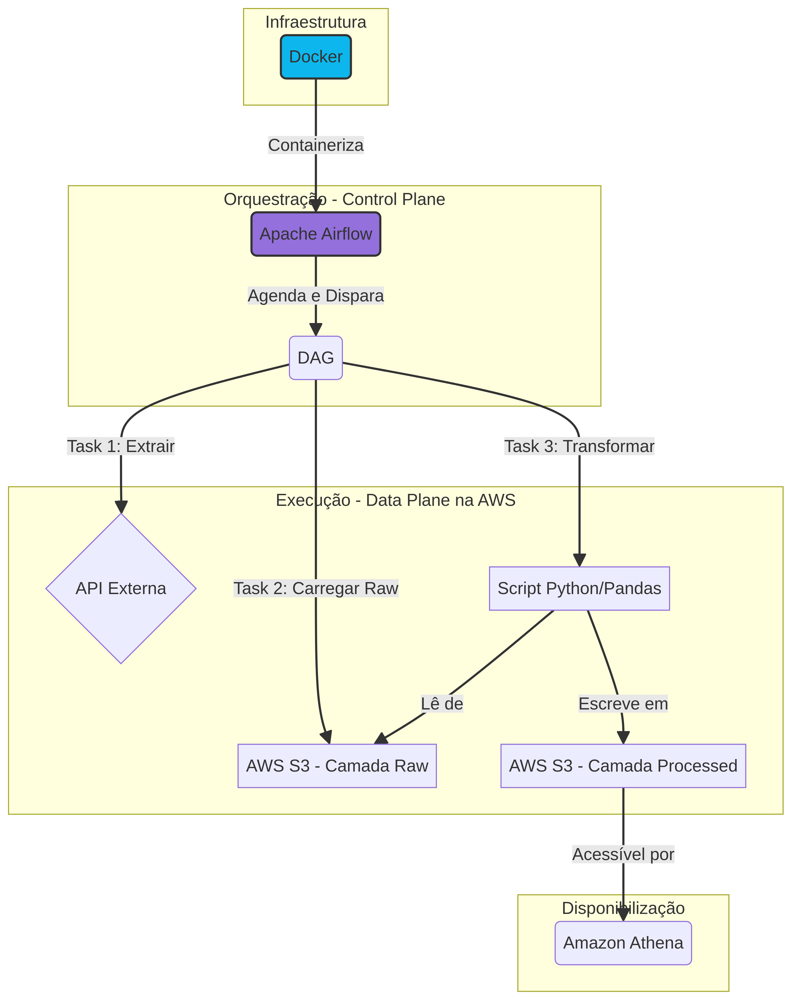

Automatização é a diferença entre um processo que funciona "quando alguém lembra" e um que funciona todo dia, no horário certo, com monitoramento e alertas. Este projeto é sobre a segunda opção.
O Desafio
Coletar dados meteorológicos de 50+ cidades brasileiras todos os dias, via API pública (OpenWeather), tratar e armazenar para análise posterior. O requisito era: zero intervenção humana na rotina diária.
Arquitetura com Airflow

O Apache Airflow foi a escolha natural para orquestração. A DAG executa às 2h da manhã, todos os dias:
- Task 1 — Extract: Faz chamadas paralelas à API do OpenWeather para cada localização
- Task 2 — Transform: Normaliza JSONs, converte temperaturas, calcula métricas derivadas
- Task 3 — Load: Salva em Parquet no
AWS S3, particionado por data e região - Task 4 — Validate: Verifica completude (todas as cidades coletadas?) e envia alerta se houver falha
Resiliência
APIs falham. A rede cai. O rate limit estoura. Por isso:
- Retry automático com backoff exponencial (até 3 tentativas)
- Alerta por email quando uma task falha após todas as tentativas
- Idempotência — reprocessar uma data não duplica dados
- Logs estruturados para debugging rápido
Infraestrutura
O Airflow roda em Docker (Compose) na AWS. Toda a infra é reproduzível — basta um docker compose up e o scheduler começa a trabalhar.
Os dados no S3 são consultáveis via Amazon Athena para análise ad-hoc, sem custo fixo de banco.
Resultados
- 365 dias de coleta sem falha crítica
- 50+ localizações coletadas em < 5 minutos
- Alerta automático em caso de falha
- Dados particionados e otimizados para consulta